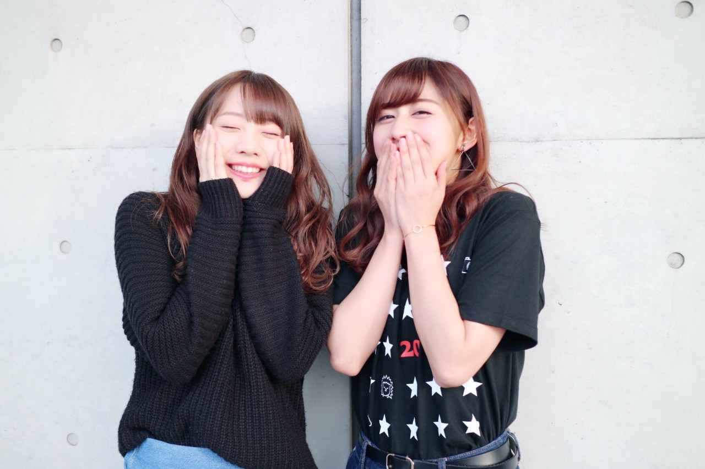
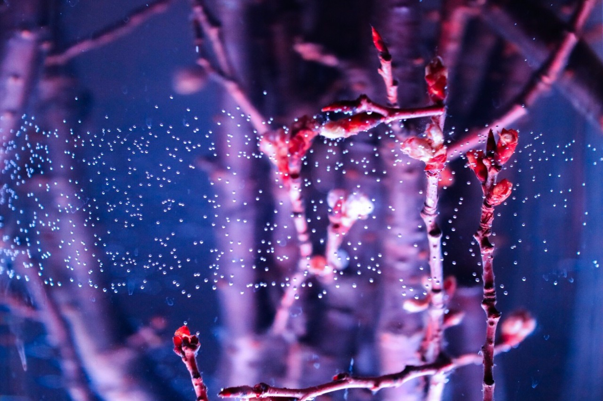
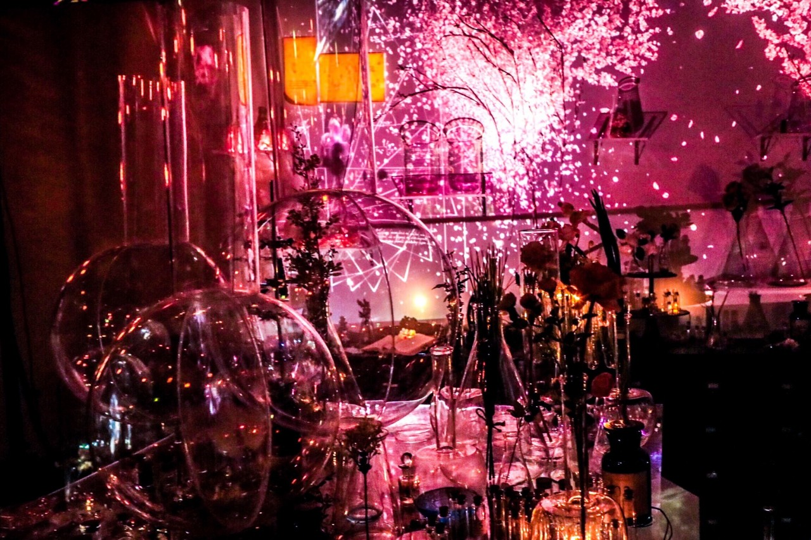
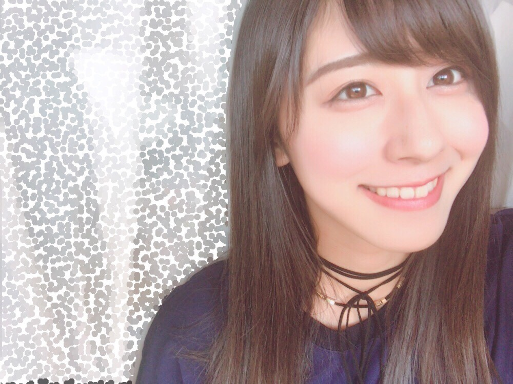

| 2017/03 09 Thu | 斎藤ちはる 3月9日 |
今日はサンキューの日。
日付通りの日だと覚えやすいね☺︎
皆さんは身近な誰かに"ありがとう"は
言えましたか？？

とびっきりスマイル♡
私は、メールでるーむめいとの皆さんに
ありがとうをさりげな〜く伝えてみました☺︎
伝わったよー！っていう人ヽ(^ ^)ﾉ？
昨日のコメントを見ていたら
肯定的なコメントが多かったので◎
こんな風に、毎日ちょこっと
今日はどんな日なのかを言っていきたいと思います！
メジャーなやつから、私が良いなと思ったやつから色々と...
今日はどんな日だったんだろ〜？
って毎日サラっと振り返られたら
それだけで毎日が特別な日に感じられそう◎
----------------------------------------------♡
「Flowers by NAKED」で
日本で1番早いお花見を見てきました！
1番好きな桜や、
一面ピンクの可愛らしいブース、
神秘的な雪の結晶をモチーフにしたオブジェや、
色んな意味を持った花束などがある
とっても素敵な空間でした！！
周りは素敵なOLさんやカップルだらけの中
1人で行ってきたのですが(笑)
プロジェクションマッピングに感動したり
作品をじっくり見たり
写真を撮ったりしていたので
1人でも全然満喫できました\( ˆoˆ )/
寂しい子みたいだけど...笑
今日は私が1人でバシャバシャ撮った
写真を紹介したいと思います◎
#chihashot

本物の桜の枝が飾ってあって
お花も綺麗だったけど
私は蕾が気になりました！
花瓶のような透明なケースの
お水の中に入っていたので
微かに水の泡が。
それが神秘的で！！
私のお気に入りの写真です☺︎
お母さんに見せたらお母さんも気に入ってくれた！

フラスコや試験管のようなものが
沢山置いてある実験室のような場所。
その壁には桜の花が咲く
プロジェクションマッピングが...！
花火のようでとっても美しい。
フラスコの後ろに透けて見えるのが
また余計に綺麗〜
たっくさん良い写真が撮れたので
また皆さんにお見せしたいと思います！
-------------------------------------------------♡
♬ ChihaMusic
「3月9日」レミオロメンさん
3月9日といえばこの曲を思い出す方が
多いのではないかというくらいに
メジャーなこの曲。
卒業シーズンのこの時期にぴったり。
歌うだけで涙が溢れてくるよね。
卒業式のことや、
日常の学校生活のことを思い出す。
"新たな世界の入り口に立ち
気づいたことは1人じゃないってこと"
この歌詞が昔から大好き！
1人じゃないって思えることが
1番安心する気がする。
永遠に色褪せない曲。
17th握手会、三会場三部が完売いたしましたヽ(；；)丿
みんなよりスタートは少し遅いけど
私にとっては大きな進歩ですヽ(；；)丿
嬉しいヽ(；；)丿
4月9日の3部目、
4月23日の3部目、
5月28日の3部目が完売です。
それ以外の部数、
日にちはまだ空いていますので
皆さん是非是非待っています(﹡ˆ ˆ﹡)
あ！そうだ！
毎回1部目は他の部とは少し違った
髪型や服装をしようかな〜◎
わざわざ早起きして来てくれる皆さんのためにっ
レアな私が見られるのは1部目かもしれないです(o^^o)

にんまり〜
おやすみ
斎藤ちはる